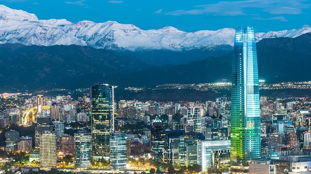
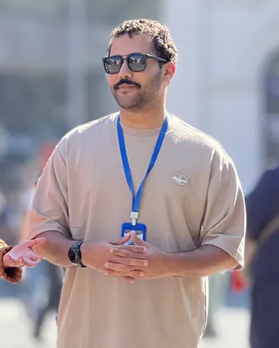

Your itinerary, our story
Divisor Turismo is a guided tour service created for Brazilian travelers visiting Santiago. Every tour is led in Portuguese, so you can ask questions, understand the history behind each stop, and enjoy the city without a language barrier.
The name comes from the Andes, the great natural divide between Chile and Argentina. The mountains are always on the horizon in Santiago, and many of our tours take you right up to them.
Why travel with us
-
Guided in Portuguese
No translation apps and no missed stories. Every explanation is given in clear Brazilian Portuguese.
-
Certified guide
Tours are led by a Sernatur-certified guide who lives in Santiago and knows the city and the mountains well.
-
Flexible itineraries
Traveling with family or a large group? Tours can be combined and adjusted to fit the days you have in Chile.
Featured tours

Meet your guide
Hi, I am Jorge Lucas da Silva, a Brazilian from Sergipe who made Santiago my home. As a bilingual guide, I welcome visitors from Brazil every season and show them the history, food, and landscapes that made me fall in love with Chile.
I also train new guides during the high season, so every tour reflects the same care for detail and service.
Ready to plan your days in Santiago?
Tell us your travel dates and group size, and you will receive a personalized quote.
Request a quote